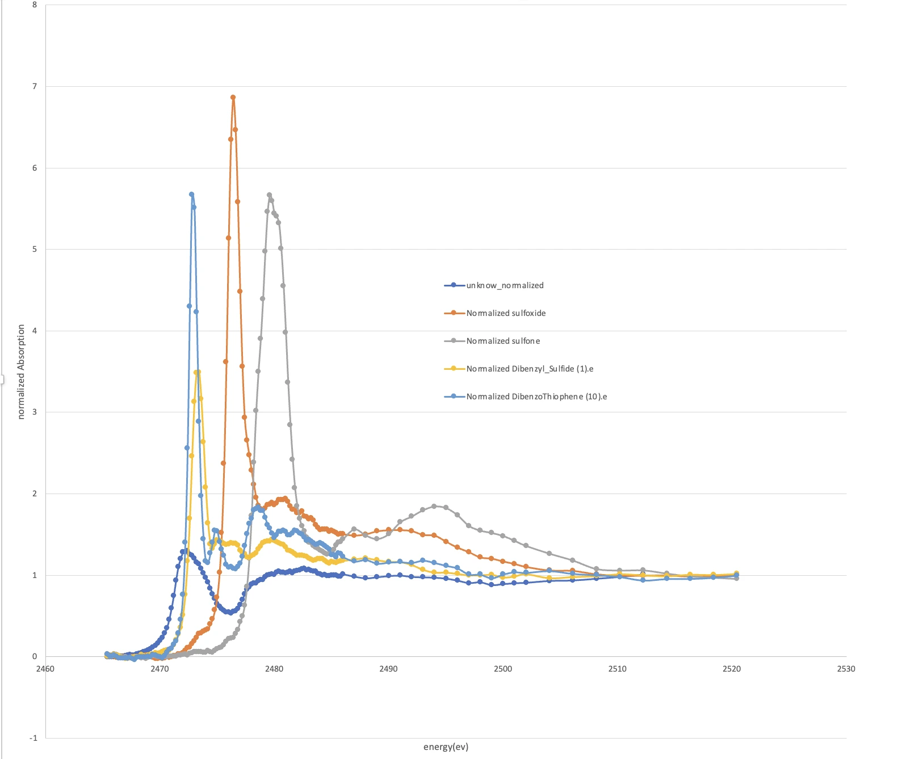

Pioneer Research Program
Reading a sulfur spectrum
One unknown sulfur spectrum, four references, and the limits of a match.

Figure 3 · Open full-size plot ↗From Table 1
Inside the fit.
Select a reference to inspect its fitted spectral weight.
fitted spectral weight
The largest contribution in the constrained fit.
fitted spectral weight
The fitted coefficient for this reference was zero.
fitted spectral weight
The fitted coefficient for this reference was zero.
fitted spectral weight
A smaller contribution alongside DBT in the constrained fit.
Spectral weights are not chemical concentrations.
The takeaway
DBT has the largest fitted spectral weight: 0.8942; sulfone contributes 0.1058.
These are spectral weights, not chemical concentrations. The match supports a similar sulfur environment, not proof of molecular identity.
Methods, mentorship & manuscript details
What I did
- Subtract the background, normalize each spectrum and align the energy grids.
- Fit four reference spectra in Excel Solver, with nonnegative weights summing to one.
- Interpret the closest match within the tested reference set.
The manuscript
Identification of an Unknown Sulfur Compound Using XANES and Linear-Combination Fitting
Faculty mentor: Ms. Kirtley · University of Kentucky
Accepted for presentation at ICBSMES-MCFM 2026, Albuquerque.
Reading PDF converted from the supplied Word manuscript; original wording and figures retained. Acceptance status is from the résumé.